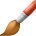
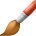

The Paint Brush Tool lays down pixels on the page, creating strokes with antialiased edges. This creates a natural transition between the stroke and the surrounding pixels.
Its variable width lines can be controlled either by velocity—most useful when drawing with a mouse—or by pressure—for use when drawing with a pressure-sensitive device.
Other brush-based tools in Pixel Persona use similar settings to control the appearance of the applied pixels, although there may be slight variations.
Most brushes use a soft, round nozzle as their default. Alternative styles can be selected from the Brushes panel.
Settings
The following settings can be adjusted from the context toolbar:
Width—the brush (stroke) size in pixels. Type directly in the text box or drag the pop-up slider to set the value.
Opacity—how see through the brush is. Type directly in the text box or drag the pop-up slider to set the value.
Flow—how fast the pixel brush effect is applied (1% is very slow, 100% is immediate). Type directly in the text box or drag the pop-up slider to set the value.
Hardness—how hard the edges of the pixel brush are. The brush appears softer as the percentage decreases. Type directly in the text box or drag the pop-up slider to set the value.
More—click to display the Brushes dialog to access advanced brush settings.
Force pressure to control size—Click to control brush size with pressure if using a pressure-sensitive device. This overrides brush defaults.
Stabilizer—enables stroke stabilization using either a Rope stabilizer or Window stabilizer mode; the former drags the stroke end by a 'rope' to smooth the stroke but lets you introduce sharp corners at increasing rope Length (radius) values by redirecting the slackened rope; the latter will smooth the stroke by averaging sampled input positions within a Window whose size is configurable.
Symmetry—when set to greater than 0, repeats the brush stroke around a number of axes (defined by the symmetry value). The center axis point can be repositioned by click-dragging it.
Mirror—with symmetry enabled, causes brush strokes to be mirrored along the X and Y axis.
Lock—when checked, prevents the symmetry line from being moved.
Blend Mode—changes how the applied pixels interact with existing pixels on a layer. Select from the pop-up menu.
Wet Edges—builds paint up along the edges of your pixel brush stroke, producing a watercolor effect.
Protect Alpha—when checked, you are not able to paint on the current layer's transparent regions.
  Paint Brush Tool
 Paint Brush Tool